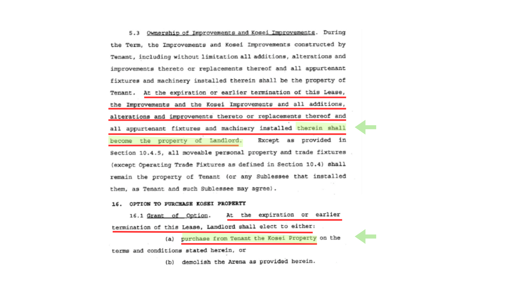

01 — Background
Why the city owns the Moda Center

The original land lease agreement from 1995 confirmed that the city would acquire the arena no later than 2025.
The single biggest fact surrounding the Moda Center renovation is that the city of Portland owns the arena. The Blazers are their tenant, and their lease with the city is up in 2030. The city has publicly pushed for a long-term lease extension. The Blazers reportedly want an updated arena before agreeing to a long-term lease. That's where we are.
In-depth
Sources
- Portland City Council Ordinance 191857.
- The Seattle Times, "Portland Finally Gets Its Promised Rose Garden — Public-Private Cooperation Provided The Financing," Oct 19, 1995.
- Arena Ground Lease §5.3, "Ownership of Improvements and Kosei Improvements" — text reported by KATU's Wright Gazaway, Jul 31 2026; original lease document not yet independently hosted.
The potential risk for the city is if the Blazers don't sign a long-term lease and they actually do leave the city, Portland will still own the Moda Center. Because of that the city will still be responsible for maintaining the building (or finding someone willing to pay the maintenance costs).
Which leads many to question: why does the city own the arena? Some have raised concerns about the city acquiring the arena from the team for $1 in 2024 and a spot of land underneath the arena for $7M.1 But when the arena was originally built in 1995, it was mostly privately funded by Paul Allen and independent financiers. Of the $262 million construction cost, roughly $46 million came from Allen personally and $155 million from a bond consortium, against about $34.5 million from the city.2 The Blazers signed a 30-year land lease agreement with the city, and the agreement was that at the end of the 30 years, ownership of the arena would transfer over to the city, if there wasn't an agreement to transfer ownership earlier.3
The city was always going to end up owning the Moda Center by no later than 2025.